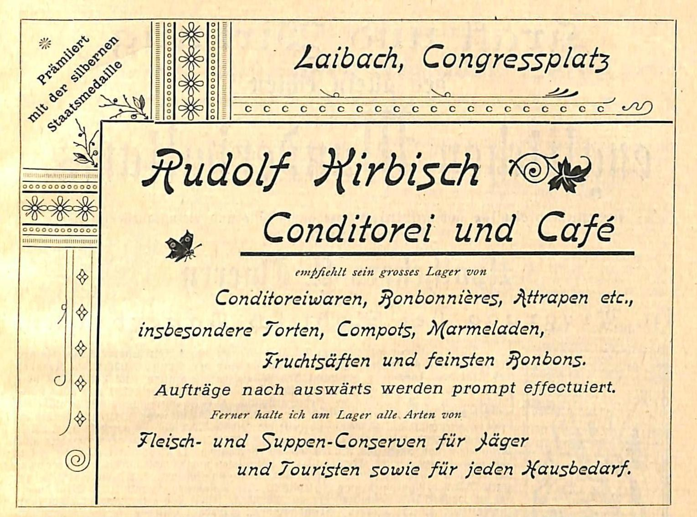

1V središču pričujočega prispevka so družbene aktivnosti v Gradcu rojenega Rudolfa Kirbischa, ki je s svojim delovanjem sooblikoval življenje v Ljubljani konec 19. stoletja. Predvsem na podlagi časopisnih virov smo poskušali konstruirati delovanje njegove slaščičarne na Kongresnem trgu in njegovo delo v Nemškem in avstrijskem planinskem društvu (Deutscher und Oesterreichischer Alpenverein DuOeAV ), v katerem je aktivno sodeloval do svoje smrti.
2Ključne besede: zgodovina 19. stoletja, Nemško in avstrijsko planinsko društvo (Deutscher und Oesterreichischer Alpenverein DuOeAV ), časopisi
1The following article focuses on the social activities of Graz-born Rudolf Kirbisch, whose activities contributed to life in Ljubljana at the end of the 19th century. Based primarily on newspaper sources, we have attempted to envision the activities of his confectionery shop in Congress Square and his efforts in the German and Austrian Alpine Society (Deutscher und Oesterreichischer Alpenverein DuOeAV) , in which he was actively involved until his death.
2Keywords: the 19th century, German and Austrian Alpine Society (Deutscher und Oesterreichischer Alpenverein DuOeAV) , newspapers
1Javno delovanje Rudolfa Kirbischa smo lahko sestavili skoraj izključno s pomočjo virov, pretežno časopisov, saj njegovih biografskih podatkov ni bilo zaslediti v razpoložljivih biografskih leksikonih.
2Omembe Kirbischeve kavarne na Kongresnem trgu se v literaturi pojavijo v začetku 20. stoletja,1 a oglasi s konca sedemdesetih let 19. stoletja izpričujejo njen obstoj že pred tem. V njih je bil Kirbisch konec 19. stoletja naveden kot hišni posestnik na Kongresnem trgu št. 8,2 kjer je bila tudi slaščičarna. Kot je znano, so bili ljubljanski gostilničarji po narodnosti v glavnem domači ljudje, kavarnarji pa tujci.3 Kljub temu pa bi glede na podatek, da zlasti na območju današnje Podravske regije skoraj 500 oseb nosi ta priimek,4 vendarle lahko zapisali, da gre za potomca slovenskih prednikov, ki so se v 19. stoletju preselili v Gradec.5
3Kdaj se je v Gradcu rojeni Rudolf Kirbiš preselil v hišo na Kongresnem trgu oziroma kdaj je postal hišni posestnik, ne vemo, gotovo pa ne pred letom 1877, saj ga v Zapisniku hiš deželnega glavnega mesta ljubljanskega ne najdemo. V stolpcu razvedno je pod številko 8 (nova ni bila navedena) na Kongresnem trgu namreč zapisan lastnik Franjo Kollman.6 Kljub temu pa bi glede na številne oglase v Laibacher Tagblattu in Slovenskem narodu lahko upravičeno sklepali, da je na omenjenem naslovu odprl kavarno že leta 1876. Domneva ne temelji le na številčnosti oglasov, ki so bili verjetno nujni za njen zagon in prepoznavnost. Pomembna je bila tudi njihova vsebina, saj je denimo v oglasu s konca oktobra 1876, objavljenem v Laibacher Tagblattu, javno naznanil, da se v njegovi »trgovini da kupiti tudi tople pijače (čokolado, čaj punč ...)«.7
4Kirbisch pa v Ljubljani ni bil znan samo kot slaščičar. Bil je močno družbeno angažiran in njegov prispevek k sooblikovanju takratnega javnega življenja v mestu ni bil majhen. Aktivno je namreč sodeloval v številnih tamkajšnjih nemških društvih. Najdemo ga med člani moškega zbora Filharmonične družbe8 in Slovenske matice,9 dve leti (1888 in 1889) je bil tudi predsednik Ljubljanskega kolesarskega kluba.10 Kot zapisano, je bil v društvih dokaj aktiven, zato ni čudno, da se je maja 1888 udeležil teka na 2000 metrov ljubljanskega biciklističnega kluba, kjer pa – glede na rezultat – ni dosegel vidnih uspehov.11 Kot bomo videli v nadaljevanju, je bil precej dejaven član Nemškega in avstrijskega planinskega društva.
5Kibisch je ob vsem delu in dejavnostih očitno tudi rad potoval, saj ga najdemo na seznamu tujcev v Celovcu, kjer je bival leta 1880 v hotelu Sandwirth skupaj s soprogo in svakinjo.12 Verjetno je bil to njegov priljubljen hotel, saj je v njem prenočeval še spomladi leta 188413 in poleti leta 1894.14
6Razlog Kirbischeve široke angažiranost se je morda skrival v tihi slutnji svoje prezgodnje smrti. Očitno je bil šibkega zdravja, saj ga večkrat najdemo na seznamu gostov različnih toplic. Tako denimo na Solnograškem (Bad Aussee) leta 189415 in med 12. ter 14. junijem 1894 v Spodnji Avstriji (Gmünd).16 Nenazadnje je bil v toplicah na Bledu, kjer je oktobra 1901 umrl. V mrliški knjigi je 24. julija 1901 kot razlog za smrti 47-letnega Kirbiša navedeno »otrpljenje srca«.17
7V osmrtnici, ki jo je objavil tudi Laibacher Zeitung, sta bila pod žalujočimi navedena le soproga in družina, tako da ne vemo, ali je imel kaj otrok. Pogreb je bil v petek 26. julija ob šesti uri, maša zadušnica pa v frančiškanski cerkvi.18 Naslednjega dne je bila objavljena podobna osmrtnica v istem časopisu v imenu društva DuOeAV.19 Vsebinsko enako osmrtnico je skupaj s kratkim dopisom 29. julija centrala DuOeAV iz Innsbrucku poslala glavnemu odboru Kranjske podružnice, v kateri z bolečino sprejema izgubo uglednega člana. Ob tem je naprošala, naj podružnica v imenu centralnega odbora društva posreduje sožalje celotni družini.20 Dan po pogrebu se je zahvalila Kirbischeva soproga tako Filharmonični družbi kot DuOeAV za vso izkazano pozornost, za prvo pomoč pa tudi zdravilišču na Bledu.21
8Kirbischevo članstvo v različnih društvih je bilo razlog, da je njegova smrt v tisku precej odmevala.22 Tako je v njegov spomin že 28. julija daljši dopis objavil Gratzer Tagblatt, v katerem neimenovani avtor poleg razloga in kraja smrti piše o Kirbischevih osebnostnih lastnostih in predvsem o širokem družbenem delovanju.23 Glede na njegove zasluge in delo v Kranjski podružnici Nemškega in avstrijskega planinskega društva (Deutscher und Oesterreichischer Alpenverein DuOeAV)je bilo pričakovati, da bo v njegov spomin objavljen tudi daljši zapis v osrednjem glasilu omenjenega društva. V zapisu se je neimenovani avtor Kirbischa spominjal prav po njegovi angažiranosti in delavnosti: »Gospod Kirbisch, energičen in hkrati vedno vesel človek, je bil neutruden delavec, ki je v upravnem odboru Kranjske podružnice storil zares zelo veliko. Kot zvest obiskovalec občnega zbora centralnega združenja je pogumni mož zagotovo postal znan širšemu krogu ljudi.«24 Besede neznanega pisca označujejo Kirbischevo zagnanost ne samo na regionalni ravni v okviru delovanja Kranjske podružnice, njegov aktivizem je bil znan tudi na ravni društva DuOeAV, katerega delovanje je segalo globoko v takratni nemški prostor.
1Kot omenjeno, je zgodba o Kirbischevi slaščičarni nastajala predvsem na podlagi oglasov, ki so bili v letih 1867–1877 precej številčni v nemškem in slovenskem ljubljanskem tisku tistega časa. V slaščičarni je bilo poleg tort25 mogoče kupiti slastne krofe26 in »frišne rumenjake«, ki jih je oglaševal tako v nemškem Laibacher Tagblatu27 kot v Slovenskem narodu.28 Številni oglasi v omenjenem obdobju so bili močna reklama, ki je bila verjetno nujna za začetek delovanje kavarne. Tako lahko denimo samo v letu 1877 spremljamo oglase vse leto, ki so se pojavljali v času pomembnejših praznikov. Kot že omenjeno, je za pusta vabil na krofe, za veliko noč pa je ponujal še potice in pisanice.29 Sledili so oglasi za posebne dobrote in darila ob birmi,30 od začetka decembra do božiča pa je »priporočal svojo obilno zalogo slaščic«.31 Očitno se je vse skupaj izplačalo in je imel precej uspeha ter posledično dela, saj je že poleti 1876 v slaščičarni iskal tudi vajenca.32
2Kot izpričujejo oglasi, so se v Kirbischevi kavarni vsaj v začetnem obdobju organizirali posamezni dogodki. Tako je na primer v božičnem času konec leta 1876 organiziral »veliko razstavo«.33 Tudi sicer so v slaščičarno meščani radi zahajali in v njej našli sladko tolažbo. Udeleženci ponesrečenega plesa v maskah konec januarja 1877 v tamkajšnjem gledališču so se z veseljem odpravili v Kirbischevo slaščičarno in »si tam popravili okus«.34 Poleg tega je Kirbisch s svojimi slaščicami sodeloval na javnih prireditvah, februarja 1877 je bil prisoten na plesu tamkajšnjega pevskega društva.35 Slednje je bilo pravzaprav pričakovati, saj je bil tudi sam njegov član.
3Kirbischeva slaščičarska ponudba je bila torej precej pestra. Kupcem so bile ob že omenjenih slaščicah na voljo poleg lastnih proizvodov še razne čokoladne dobrote iz Pariza, Dunaja, Berlina, Stuttgarta. Odlične slaščice so bile iz Pariza in Italije, še posebej pa je priporočal domače orehove potice z medom. Oglase za »prave kranjske potice« je bilo najti v različnih časopisih onstran Karavank: Dillinger's Reisezeitung,36 Pester Lloyd37 in Deutsches Volksblatt.38
4V kavarni ni bilo mogoče kupiti samo slaščic, ampak tudi »konzerve za lovce in turiste« (slika 1).39 Da je Kirbisch želel poskrbeti tudi za takratne gorohodce, je povsem razumljivo, saj je bil sam navdušen obiskovalec gorskega sveta in aktiven član Kranjske podružnice DuOeAV.

Vir: Deutscher Kalender für Krain, nepaginirano5Poleg oglasov v Laibacher Tagblattu inSlovenskem narodu leta 1877 je bilo tudi pozneje najti reklamo za Kirbischevo kavarno tostran40 in onstran Karavank: v vodiču po kavarnah Illustrierte Sport Zeitung41 ali vodniku po kavarnah v Gratzer Tagblattu.42 V slednjem je bilo praktično vsak mesec najti njegove oglase v obdobju 1898–1900. Številni oglasi pa niso širili le glasu o Kirbischevi slaščičarni in kavarni, ampak tudi o Ljubljani. Lahko bi zapisali, da sta se posredno z njimi širila reklama in védenje predvsem o osrednjem delu takratnega slovenskega prostora.
1V DuOeAV je Rudolf Kirbiš predstavljal enega od dveh stebrov Kranjske podružnice omenjenega društva, saj je kot prvi blagajnik v vodstvenem odboru sodeloval deset let (1890−1901). V društvu pa ni samo pobiral članarine oziroma prijavnin, na primer za udeležbo na večdnevnem zborovanju centrale društva DuOeAV leta 1895.43 V njegovi hiši je Kranjska podružnica omenjenega društva imela svoj prostor. Kot je navedeno v letnem poročilu za leto 1900, je bilo sobno pohištvo iz borovega lesa (cemprina), in sicer sta bili dve knjižni omari, v katerih je bilo knjižnično gradivo, sejna miza s pisalnim priborom, deset udobnejših stolov (Sessel). K ostali opremi so spadali arhivska omara, v kateri so bili arhiv, izvodi publikacije Mitteilungen des Deutschen und Oesterreichischen Alpenvereins, štampiljke društva ipd., miza z reliefom štajerskih Alp, na steni je bila pritrjena deska z obešalnimi kljukami, umivalnik, tri slike s slavnosti ob odprtju koč (Dežmanove in Cojzove koče) in slika s prvega vodniškega tečaja v Mojstrani. Na stenah so bile še dve sliki bivakov, uokvirjena razglednica in tabla. V društveni sobi so bili še luč, nahrbtnik planinske reševalne postaje z nosili, škatla povojev in dve reševalni vrvi.44
2S Kirbischevo smrtjo je podružnica morala poiskati nov prostor za sestanke, kar izpričujejo kasnejši seznami stroškov, priloženi letnim poročilom. Od leta 1902 dalje se je namreč med izdatki društva začela pojavljati rubrika Vereinszimmer, v kateri so bili navedeni stroški društva, ki so vedno znašali nekaj nad 100 kron.45
3Kot zapisano, je bil Kirbisch v okviru omenjenega društva precej aktiven. Skrbel je za denarne zadeve, ob tem pa se je udeleževal tudi otvoritev planinskih koč. 16. avgusta 1896 je denimo ob slovesni otvoritvi adaptirane Deschmannove koče za udeležence tudi kuhal. Očitno je bila to ne le njegova strast, ampak so bile jedi tudi okusne. Drugače si verjetno ne bi zaslužil omembe v novici o omenjenem dogodku, objavljeni v časopisu Mitteilungen des Deutschen und Oesterreichischen Alpenvereins. V njej je bilo namreč med drugim zapisano, da so udeleženci »precej uživali« v dobrotah izpod kuharske žlice Rudolfa Kirbischa.46
4Kirbischeva ljubezen do kuhanja je prišla do izraza v času prvega vodniškega tečaja na Slovenskem v Mojstrani leta 1894.47 Trinajst bodočih planinskih vodnikov je namreč poleg obveznih učnih ur v prostem času pod vodstvom Rudolfa Kirbischa pridobivalo »bogata« kuharska znanja.48
5V okviru Kirbischevega delovanja v DuOeAV gre zagotovo izpostaviti še knjižnico, ki je bila v njegovi hiši. Kdaj točno se je odprla, ne vemo, a glede na oglas iz leta 1876 je bil v kavarni že od samega začetka prostor, v katerem se je lahko prebiralo številne revije in dnevnike.49 Glede na ugodne pogoje bi lahko sklepali, da je tam začela knjižnica delovati vsaj od Kirbischevega članstva v glavnem odboru Kranjske podružnice naprej, torej od leta 1890 dalje, morda celo prej. Za njo je po vsej verjetnosti skrbel Kirbisch sam, saj je pod zapisi v zvezi s knjigami v letnih poročilih navadno njegov podpis.
6Glede na razpoložljivost oziroma ohranjena letna poročila lahko nekaj podatkov izvemo o delovanju knjižnice. Tako na primer za leto 1897 beremo, da je bila knjižnica malo obiskana oziroma uporabljana,50 v naslednjem letu, leta 1898, je knjižnica dobila številne knjige.51
7Iz leta 1901 obstaja tudi popis gradiva, ki ga je uredil dr. jurist August von Plachki,52 od leta 1900 tudi član vodstvenega odbora Kranjske podružnice.53 V uvodu dvanajststranske knjižice je navedena lokacija knjižnice v Kirbiševi hiši, dostopna vsem članom društva DuOeAV, ki so ključe lahko dobili v kavarni. Da bi zagotavljali obstojnost knjižnice, je bilo izposojene knjige treba vrniti znotraj štirih tednov, vsekakor do konca tekočega leta. V nasprotnem primeru so bile nove knjige kupljene na stroške uporabnika. V nadaljevanju sledi podroben seznam knjig in ostalega knjižnega gradiva.54 K slednjemu sodijo v poseben poglavju zapisani naslovi časopisov, zbornikov itd. ter drugo gradivo. V seznamu knjig je naštetih 183 enot, med katerimi najštevilčnejšo skupino predstavljajo jubilejni zborniki podružnic DuOeAV (23). Na seznamu je po pričakovanjih najti vodnike in druga pomembnejša dela s področja takratne turistike.55 Med njimi je gotovo najstarejša Scopolijeva Flora carniolica iz leta 1772.56 Med ostalimi omenimo Baumbachovega Zlatoroga,57 Bebberov Katechismus der Meteorologie,58 Czornigove separate iz časopisa Zeitschrift des Deutschen und Oesterreichischen Alpenvereins – Die deutsche Sprachinsel Sauris in Friaul,59 Vossovo Versuch einer Geschichte der Botanik v dveh delih60 in Urbasovo predavanje o orografskih značilnostih Kranjske iz leta 1874.61
8Med periodiko najdemo 24 naslovov časopisov, večinoma nemških, a tudi italijanskih, denimo Rivista alpina italiana.62 Na seznamu drugega gradiva najdemo različne vrste zemljevidov, po številu pa izstopajo specialne karte (21) in razgledi (Rundschau) z različnih vrhov (21).63
9Knjižnico so vsako leto dopolnjevali tudi s podarjenimi knjigami pokojnih članov.64 Stare knjige Deschmannove koče in koče na Golici je glavni odbor leta 1903 poslal v centralno knjižnico v Münchnu.65 Po sklepu vodstvenega odbora Kranjske podružnice so knjige lahko podarjali, denimo leta 1898 so jih podarili šoli v Beli Peči (Weissenfels). Šlo je za več zvezkov dela Atlas der Alpenflora, ki je izšlo v založbi društva DuOeAV.66
10V letnih bilancah lahko opazujemo tudi dinamiko financiranja knjižnice. Tako je v letu 1897 bilo za namene knjižnice porabljenih 7,95 fl,67 že naslednje leto pa 140,04 fl.68 Med dobljenimi podatki izstopata dve leti, in sicer leto 1900, v katerem je bilo v knjižnico vloženih 334,20 fl,69 in 1909, ko so stroški knjižnice bili 359,76 fl.70 Najmanj denarja je bilo poleg omenjenega leta 1897 vloženega še leta 1899 (81 fl)71 in 1905 (78,2 fl)72. Sicer so se stroški gibali med 100 in 200 fl.
11Usoda knjižnice oziroma knjig ni znana. Kot zapisano, se je vodstveni odbor Kranjske podružnice DuOeAv po Kirbischevi smrti moral preseliti, verjetno tudi knjižnica. O njeni poti po letu 1919, ko se je zgodila nova politična stvarnost, lahko le ugibamo. 24. maja 1919 je sklep deželne vlade (Oddelek za trgovino in obrt) določil, »da se vsa imetja društva 'Deutscher Oesterreichischer Alpenverein' v območju Slovenije stavi pod posebno nadzorstvo in sekvester. Sekvestrom se imenuje g. Makso Hrovatin, tiskar v Ljubljani, kateremu je naročeno, da ima takoj popisati sekvestrirano imetje in popis z okroglo cenitvijo vrednosti semkaj doposlati«.73 Vprašanje, ali so knjige ob prepovedi društva DuOeAV prišle pod sekvester ali so bile morda celo uničene, ostaja odprto. Dejstvo o dokaj velikem obsegu knjižničnega gradiva pa ostaja.
1Rudolf Kirbisch je bil vse prej kot samo lastnik slaščičarne oziroma kavarne na Kongresnem trgu v drugi polovici 19. stoletja. Njegova kavarna je obiskovalcem nudila precej pestro izbiro domačih in tujih slaščic. Bila je tudi prostor, kamor so po večernih prireditvah zahajali ljubljanski meščani.
2Kirbisch je bil močno angažiran član takratne ljubljanske družbe, saj ga najdemo v različnih nemških društvih v Ljubljani. Bil je član Filharmonične družbe, »alpenvereina« in Kolesarskega kluba, v katerem je bil tudi predsednik. V omenjenih društvih Kirbisch ni bil le član na papirju, ampak je v njih precej aktivno sodeloval. Njegova široka družbena aktivnost torej takratnega javnega življenja v Ljubljani ni bogatila samo s slaščicami. Poleg prispevka, ki ga je nudil v lokalnem okolju, je zlasti z delovanjem v DuOeAV močno prispeval k odpiranju takratnega slovenskega prostora globoko v današnji skupni evropski prostor. Oglasi njegove slaščičarne, natisnjeni v številnih časopisih tudi onkraj Karavank, so posredno širili tudi glas o kranjskem deželnem središču in o takratnem slovenskem prostoru.
* Dr., docentka, Oddelek za germanistiko z nederlanistiko in skandinavistiko, Filozofska fakulteta, Aškerčeva cesta 2, SI–1000 Ljubljana, mojca.peternel@guest.arnes.si
1. Vrhovnik, Gostilne v stari Ljubljani, 33.
2. Dillinger's Reisezeitung, 1. 4. 1901, št. 10, 12.
3. Brglez, Gostilne na Kongresnem trgu, 194. Ovsec, Spremna beseda. O Kongresnem trgu gl. Mihelič, Kongresni trg. Valenčič, Oblikovanje Ljubljane, 141–52.
4. Republika Slovenija, Statistični urad.
5. O Slovencih v Gradcu gl. Granda, Graška Slovenija 1848/1849, 45–84.
6. Häuser-Verzeichnes der Landeshauptstadt Laibach, 13 in 55. O tem gl. Valenčič, Oblikovanje Ljubljane. O številčenju ulic gl. Valenčič, Zgodovina ljubljanskih uličnih imen, 51–60.
7. Laibacher Tagblatt, 31. 10. 1876, št. 250; 2. 11. 1876, št. 251; 6. 11. 1876, št. 254.
8. Kuret, Kronika Ljubljanske filharmonične družbe, 123. O tej družbi gl. Kuret, Ljubljanska filharmonična družba.
9. Vovko, Članstvo Slovenske matice v Ljubljani, 455.
10. Gedenkblatt des Laibacher Bicycle Club, aus Anlass des Feiers seines fünfjährigen Jubileums, nepaginirano, Club Ausschusse,
11. Allgemeine Sport Zeitung 17. 5. 1888, 535.
12. Klagenfurter Zeitung, 14. 9. 1880, št. 210, 1740.
13. Klagenfurter Zeitung, 9. 3. 1884, št. 58, 502.
14. Klagenfurter Zeitung, 20. 6. 1894, št. 138, 1342.
15. Cur- und Fremden-Liste des Badeortes Aussee, 1894, št. 1.
16. Fremden-Liste, Gmunder Curliste, št. 4.
17. NŠAL, Mrtvaška knjiga Marijinega oznanjenja v Ljubljani, 86.
18. Laibacher Zeitung, 25. 7. 1901, št. 168, 1403, Osmrtnica.
19. Laibacher Zeitung, 26. 7. 1901, št. 169, 1411, Osmrtnica.
20. AAI, Sektion Krain Schriftverkehr 252.102 1898–1911, 24: Parte für Rudolf Kirbisch, langjähriger Kassier der S. Krain (gestorben 24. 7. 1901).
21. Laibacher Zeitung, 27. 7. 1901, št. 170. 1417, Zahvala.
22. Deutsche Stimmen, Beilage zu Nr. 213 des Gratzer »Tagblattes«, 4. 8. 1901, št. 64, nepaginirano, Rudolf Kirbisch †. Innsbrucker Nachrichten, 2. 9. 1901, št. 200, 5, Jahresbericht des D. u. Oe. Alpenvereins. Deutsche Stimmen, Beilage zu Nr. 331 des Gratzer »Tagblattes«, 30. 9. 1901, št. 98, Philharmonische Gesellschaft.
23. Deutsche Stimmen aus Krain, Treist und Küstenland. Beilage zu Nr. 206 des 'Grazer Tagblates', Organes des Deutschen Volkspartei für die Alpenländer, 28. 7. 1901, št. 63.
24. Mittheilungen des Deutschen und Oesterreichischen Alpenvereins, 1901, št. 15, 185, R. Kirbisch.
25. Laibacher Tagblatt, 17. 3. 1877, št. 63. Slovenski narod, 22. 3. 1877, št. 65.
26. Laibacher Tagblatt, 20. 1. 1877, št. 16; 22. 1. 1877, št. 17; 23. 1. 1877, št. 18; 9. 2. 1877, št. 32; 10. 2. 1877, št. 33; 12. 2. 1877, št. 34.
27. Laibacher Tagblatt, 17. 2. 1877, št. 39; 20. 2. 1877, št. 41; 21. 2. 1877, št. 42; 22. 2. 1877, št. 43; 23. 2. 1877, št. 44.
28. Slovenski narod, 18. 2. 1877, št. 39; 20. 2. 1877, št. 40; 22. 2. 1877, št. 42; 23. 2. 1877, št. 43; 24. 2. 1877, št. 44, 25. 2. 1877, št. 45.
29. Laibacher Tagblatt, 29. 3. 1877, št. 72; 30. 3. 1877, št. 73; 31. 3. 1877, št. 74; št. 75.
30. Laibacher Tagblatt, 17. 5. 1877, št. 112. Slovenski narod, 18. 5. 1877, št. 112; 19. 5. 1877, št. 113.
31. Laibacher Tagblatt, 1. 12. 1877, št. 277. Slovenski narod, 1. 12. 1877, št. 275.
32. Laibacher Tagblatt, 14. 8. 1876.
33. Laibacher Tagblatt, 16. 12. 1876, št. 288; 18. 12. 1876, št. 289; 19. 12. 1876, št. 290. Vereinigte Laibacher Zeitung, 16. 12. 1876, št. 288, 2332.
34. Laibacher Tagblatt, 29. 1. 1877 št. 23.
35. Laibacher Tagblatt, 9. 2. 1877, št. 32, Sängerball.
36. Dillinger's Reisezeitung, 10. 1. 1892, št. 2, 10; 1. 4. 1901, št. 10, 12.
37. Pester Lloyd, 12. 12. 1893, št. 296; 22. 3. 1894, št. 71.
38. Deutsches Volksblatt, 14. 12. 1895, št. 2496, 15.
39. Deutscher Kalender für Krain, nepaginirano. Vrhovnik, Gostilne v stari Ljubljani, 33.
40. Deutscher Kalender für Krain, nepaginirano.
41. Illustrierte Sport Zeitung 17. 6. 1897, št. 37, 9, Hotelführer, Restaurants und Cafes.
42. Grazer Tagblatt, 25. 4. 1897, št. 141, Wegweiser für Hotels, Cafes und Restaurants. Grazer Tagblatt, 30. 5. 1897, št. 149, 12, Wegweiser für Hotels, Cafes und Restaurants.
43. Laibacher Zeitung, 15. 7. 1895, št. 159, 1390, Deutscher und österreichischer Alpenverein.
44. BAB, Jahresbericht über das Jahr 1900 in Deutscher und österreichischer Alpenverein ' Section Krain in Laibach 1874 bis 1901'. Festschrift zur Feier des zwanzigjährigen Bestehens seit der Neugründung im Jahre 1881, 19.
45. AAI, Section 'Krain' des DuOeAV, Jahresbericht 1903 (31. 1. 1904).
46. Mittheilungen des Deutschen und Oesterreichischen Alpenvereins, 1896, št. 16, 201, 202, Eröffnung des erweiterten Deschmannhauses und des neuen Urataweges am Triglau.
47. Roschnik, Führerlehrkurs in Mojstrana, 83, 84.
48. Prav tam, 83.
49. Laibacher Tagblatt, 31. 10. 1876, št. 250; 2. 11. 1876, št. 251; 6. 11. 1876, št. 254.
50. BAB, Auszug aus dem Jahresbericht über das Jahr 1897.
51. BAB, Auszug aus dem Jahresbericht über das Jahr 1898.
52. Dr. August Plachki je bil jurist in avtor dela Die Deutschen in Untersteiermark. Geschichte und Schicksal des steirischen Unterlandes. Najdemo ga na seznamu Staats–Gymnasiun zu Klagenfurt leta1886, v katerem piše, da je izhajal iz Mährisch-Schönberg in Mähren. – Anenforschung.Net.
53. Peternel, »Ljubiteljem kranjskih Alp!«, 227.
54. Bücher-Verzeichnis.
55. Prav tam, 4–9.
56. Scopoli, Flora Carniolica V1, na seznamu v knjigi Bücher-Verzeichnis, 8.
57. Baumbach, Zlatorog – eine Alpensage, na seznamu v knjigi Bücher-Verzeichnis, 4.
58. Bebber, Katechismus der Meteorologie, na seznamu v knjigi Bücher-Verzeichnis, 4.
59. Karl Czoernig von Czernhausen von, na seznamu v knjigi Bücher-Verzeichnis, 5.
60. Voss, Versuch einer Geschichte der Botanik in Krain, na seznamu v knjigi Bücher-Verzeichnis, 9.
61. Urbas, Die oro- und hydrographischen Verhältnisse Krain's, na seznamu v knjigi Bücher-Verzeichnis, 9.
62. Bücher-Verzeichnis, 9, 10.
63. Prav tam, 10–12.
64. AAI, Section 'Krain' des DuOeAV, Jahresbericht 1901 (15. 1. 1902).
65. AAI, Section 'Krain' des DuOeAV, Jahresbericht 1903 (31. 1. 1904).
66. BAB, Auszug aus dem Jahresbericht über das Jahr 1898. Atlas der Alpenflora. 3 Leinenkassetten mit 5 Bänden Tafeln.
67. BAB, Auszug aus dem Jahresbericht über das Jahr 1897.
68. BAB, Auszug aus dem Jahresbericht über das Jahr 1898.
69. BAB, Jahresbericht 1900.
70. BAB, Jahresbericht 1909.
71. BAB, Auszug aus dem Jahresbericht über das Jahr 1898.
72. BAB, Jahresbericht 1905.
73. AAI, OeAV SE 252.103 (24. 5. 1919).